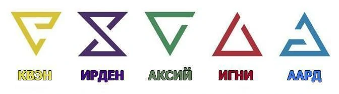
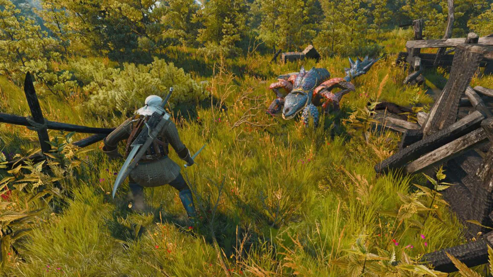

Третя частина серії поєднує в собі нелінійний сюжет і відкритий ігровий світ, який у тридцять разів більший, ніж світ Відьмака 2. Для пересування можна використати різний транспорт, наприклад, кобилу Плітку або човен. Проходження основної сюжетної
лінії займає близько 50 годин гри. Побічні квести займають приблизно стільки ж. За цей час герой може розвинутись до максимального 35-го рівня. Механіка бою ґрунтується на принципах попередніх ігор, але команда розробників переглянула безліч
деталей. Так, перекат замінено піруетом, що за задумом зберігає захисну функцію без втрати мобільності; можливо відбити удар або ухилитися, навіть якщо закінчилася енергія, проте збільшується вірогідність втратити при цьому рівновагу; можливість
взаємодіяти з оточенням під час бою, наприклад розворушити осиний вулик знаком Аард для завдання додаткових ушкоджень ворогам. Передбачені 96 анімацій рухів Ґеральта в бою (в останній грі їх було 20). CD Projekt RED повідомляли, що у створенні
бойових анімацій брали участь експерти в царині фехтування. Також при захопленні рухів використовувався каскадер. Штучний інтелект ворогів повністю перероблений.

Одночасно можна скористатися невеликим числом навичок, для них відведені спеціальні комірки. Окрім розвитку талантів існують «мутагени», що діляться за кольорами, і, якщо прив'язувати мутагени до талантів того ж відтінку, дають більший
бонус до характеристик. Також перероблена система магічних знаків, використовуваних відьмаком. Так, кожен з п'яти знаків має основну форму, а при просуванні по вибраній гілці буде можливо відкрити вторинну форму знаку, наприклад знак
Ігні в початковій формі дозволяє здійснити викид полум'я. Вторинна форма дає кругову атаку. Пити еліксири можна прямо під час боїв, проте час їх дії зменшений. Зібрати інгредієнти для конкретного рецепта зілля тепер потрібно всього
один раз, запас настоянок автоматично поповнюється при медитації, якщо в інвентарі є досить спирту. Серед інших особливостей і поліпшень: можливість зберігати предмети в сідельних сумках інвентаря, оновлена механіка «Відьмачого чуття»(англ.
Witcher Senses) — вона дозволяє бачити докази і сліди, — можливість створення предметів, броні та зброї, а також можливість імпорту збережених даних з попередньої частини

Третя частина серії поєднує в собі нелінійний сюжет і відкритий ігровий світ, який у тридцять разів більший, ніж світ Відьмака 2. Для пересування можна використати різний транспорт, наприклад, кобилу Плітку або човен. Проходження основної
сюжетної лінії займає близько 50 годин гри. Побічні квести займають приблизно стільки ж. За цей час герой може розвинутись до максимального 35-го рівня. Механіка бою ґрунтується на принципах попередніх ігор, але команда розробників
переглянула безліч деталей. Так, перекат замінено піруетом, що за задумом зберігає захисну функцію без втрати мобільності; можливо відбити удар або ухилитися, навіть якщо закінчилася енергія, проте збільшується вірогідність втратити
при цьому рівновагу; можливість взаємодіяти з оточенням під час бою, наприклад розворушити осиний вулик знаком Аард для завдання додаткових ушкоджень ворогам. Передбачені 96 анімацій рухів Ґеральта в бою (в останній грі їх було
20). CD Projekt RED повідомляли, що у створенні бойових анімацій брали участь експерти в царині фехтування. Також при захопленні рухів використовувався каскадер. Штучний інтелект ворогів повністю перероблений.